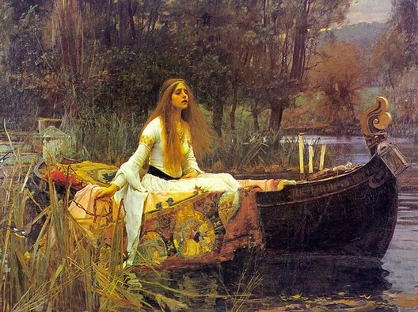

O kanañ war al lenn
Chantant sur l'étang
Singing on the brook
Chant collecté par Théodore Hersart de La Villemarqué
dans le 1er Carnet de Keransquer (p. 275).

Mélodie
Arrangt Christian Souchon (c) 2015
|
A propos de la mélodie Inconnue. Remplacée par "Mari-Louiz Ton diwezhañ fisel", une mélodie que M. Pierre Quentel (voir liens) a apprise lors du stage KEAV (Camp interceltique des Bretonnants) 2004 à Scaër. A propos du texte Notée uniquement par La Villemarqué. La référence au chevalier du Laz suggère une origine purement familiale de ce chant. Il pourrait en effet évoquer la rencontre d'Eugène-François Jégou du Laz (1788-1874) et de Camille de La Villemarqué (1803-1853) qui se marièrent en 1826. Cette dernière n'est autre que la sur aînée de Théodore de La Villemarqué, l'auteur du Barzhaz, des carnets de Keransquer et, peut-être, du présent chant. Le frère aîné d'Eugène, Joseph-François-Bonabes Jégou du Laz (1783-1851), est le personnage dont la conduite édifiante est évoquée dans les chants du Barzhaz: |
About the tune Unknown. Replaced here by "Mari-Louiz Ton diwezhañ fisel", a tune learnt by M. Pierre Quentel (see links) during the 2004 session of the KEAV (Interceltic Breton-Speakers' Camp) at Scaër. About the lyrics Recorded by La Villemarqué only. From the mention of Chevalier du Laz we may infer that this song has a purely domestic origin, since it could describe the encounter of Eugène-François Jégou du Laz (1788-1874) with Camille de La Villemarqué (1803-1853) who were to marry in 1826. The latter is none other than the elder sister of Théodore de La Villemarqué, the author of the "Barzhaz", who wrote the Keransquer copybooks and, who knows?, the song at hand. Eugène's elder brother, Joseph-François-Bonabes Jégou du Laz (1783-1851), is the character whose edifying behaviour is extolled in two Barzhaz songs: |
|
BREZHONEK p. 275 1. An dimezell o lenn Barzh ur bag war al lenn Ha ganti ur zae glas A feson leun a c'hras, 2. A oa o vonet gant an dour, Hep trouz ebet, hep lared gaou, Pa dremenas ur marc'hek braz, 3. Pa dremenas marc'hek al Laz, War e gazek 'n un galop braz Ha di-ouzhi trumm a zellas: 4. - Homañ a vezo va fried Homañ va fried a vezo, Pe 'n am-bezo sur gwreg ebed Pe biken pried 'n am-bezo. - KLT gant Christian Souchon. |
TRADUCTION FRANCAISE p. 275 1. La belle sur l'étang En sa barque lisant Etait vêtue de bleu: Spectacle gracieux! 2. La barque suivait le courant, Sans le plus léger bruit, vraiment. Un chevalier vint à passer: 3. Le comte du Laz chevauchait Sa jument au triple galop Mais il vit le charmant tableau: 4. - C'est mon épouse que je vois. Je l'épouserai, par ma foi! Si jamais je dois prendre femme, Ce ne sera que cette dame. - Traduit par Christian Souchon |
ENGLISH TRANSLATION p. 275 1. The young lass with her book In a boat on a brook She wore a dress of blue. A most ravishing view! 2. The little boat was drifting by, Without the least noise, I don't lie, When suddenly it came to pass: 3. Who rode that way? The knight of Laz On his horse, a galloping mare, Caught a glimpse of the lass so fair: 4. - This one shall be my wife, for sure No other wife shall I procure For sure, this one shall be my wife, It's with her I will live my life. - Translated by Christian Souchon |

An Amzer dremenet